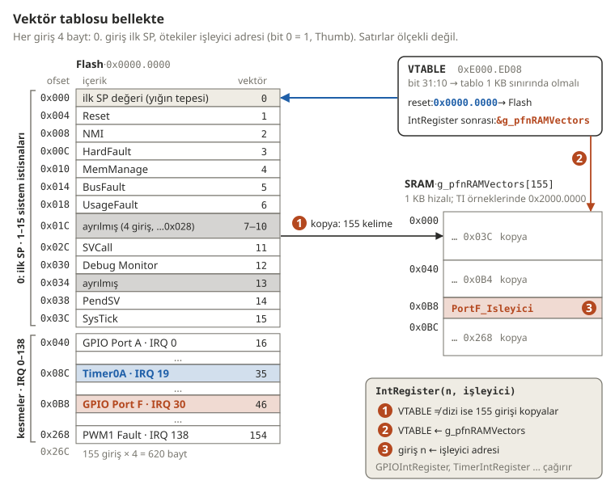
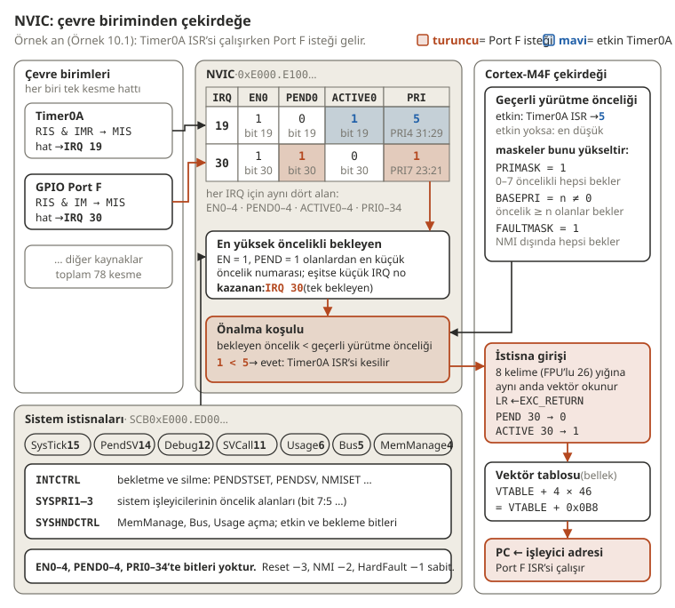
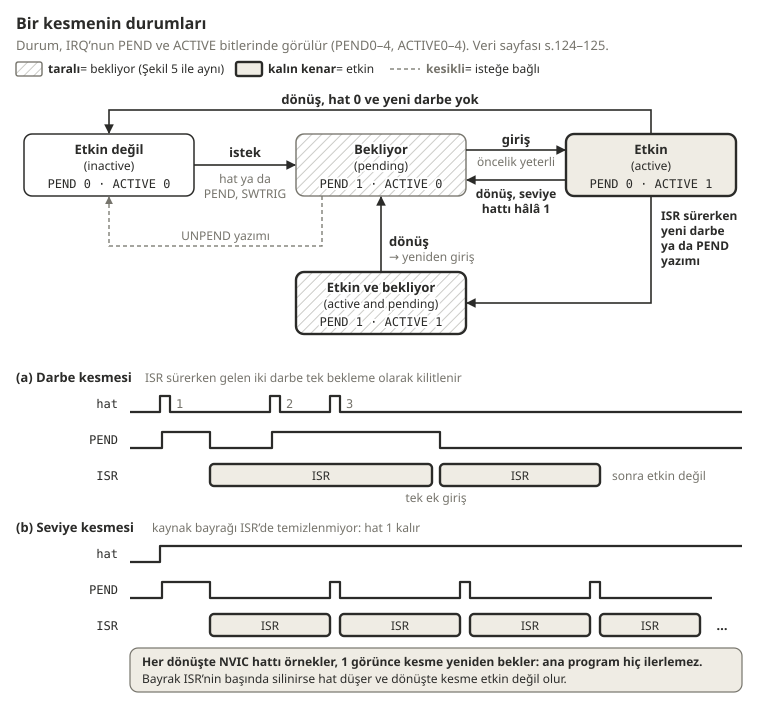
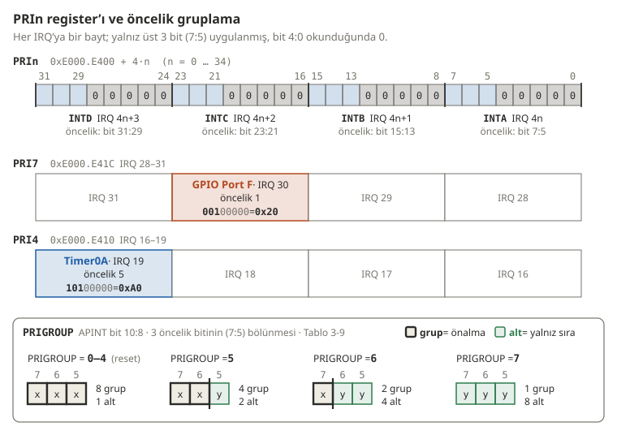
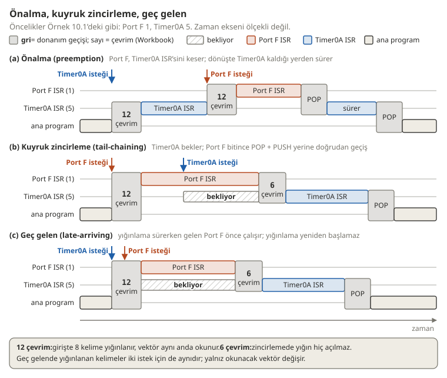
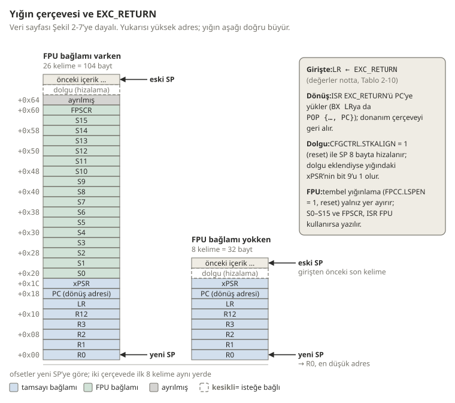

NVIC ve Kesme Önceliği
Önceki notlarda her çevre birimi için tek bir kesme kurduk ve öncelik hiç ayarlamadık. İki kesme aynı anda geldiğinde hangisinin önce çalışacağına, bir işleyicinin ötekini kesip kesemeyeceğine ve bunun kaç çevrim sürdüğüne NVIC (Nested Vectored Interrupt Controller, iç içe vektörlü kesme denetleyicisi) karar verir. Bu not NVIC'in kendisini anlatır: numaralandırma, NVIC ve SCB (sistem denetim bloğu) register'ları, öncelik ve gruplama, bekleyen ve etkin durumlar, iç içe kesme, yığın çerçevesi, maskeleme, yazılımla tetikleme ve hata istisnaları.
0. Amaç ve öğrenme kazanımları
Bu notun amacı, birden çok kesmeli bir programda öncelikleri bilinçli vermeyi, iç içe kesmeyi ve kuyruk zincirlemeyi anlamayı, kritik bölgeyi doğru maskeyle korumayı ve bir HardFault'un nedenini register'lardan okumayı hem register düzeyinde (API'siz) hem TivaWare ile (API'li) yapabilmektir. Bu notun sonunda öğrenci:
- Vektör numarası, IRQ numarası ve ofseti birbirinden hesaplar. TivaWare'in
INT_…sabitlerinin vektör numarası olduğunu bilir. - NVIC'in EN, DIS, PEND, UNPEND, ACTIVE, PRI, SWTRIG register'larını ve SCB'nin INTCTRL, VTABLE, APINT, SYSPRI, SYSHNDCTRL ve hata register'larını kullanır.
- Bayt değeri ile öncelik numarasını ayırır (0xA0 = 5), PRIGROUP'u ve eşit öncelik kuralını açıklar.
- Önalma, kuyruk zincirleme ve geç gelen kesmeyi, yığın çerçevesini ve EXC_RETURN'ü açıklar.
- PRIMASK, FAULTMASK ve BASEPRI arasında seçim yapar, iç içe güvenli kritik bölge yazar.
- Saatsiz çevre birimine erişimden doğan HardFault'u FAULTSTAT, HFAULTSTAT ve FAULTADDR ile çözümler.
- TI'ın
interruptsörneğini UART'sız çalıştırır, ders kodlarındaki NVIC kullanımını değerlendirir.
Kesmenin temel yolu (bayrak → maske → EN → PRIMASK → vektör → ISR → bayrak temizleme) tekrar edilmez: Zamanlayıcılar notu, 2. bölüm, GPIO kesmeleri, SysTick.
1. İstisna numarası, kesme numarası, vektör
Amaç: aynı kesmeyi gösteren üç sayıyı karıştırmamak.
Normal akışı kesen her olay bir istisnadır (exception). Çevre birimlerinden gelenlere kesme (IRQ) denir (s. 102–103). Her istisnanın bir vektör numarası vardır. Bu, istisna numarasıdır: IPSR'de ve INTCTRL'nin VECACT alanında okunan değer (s. 162). 0 numaralı giriş ilk yığın işaretçisidir, 1–15 sistem istisnaları, 16 ve sonrası kesmelerdir. Kesmelerin bir de IRQ numarası vardır: NVIC register'larındaki bit sırası (Tablo 2-9, s. 104–106).
vektör no = IRQ + 16 ofset = 4 × vektör no adres = VTABLE + ofset
Timer0A : IRQ 19 -> vektör 35 -> ofset 0x08C -> EN0 bit 19, PRI4 bit 31:29
Port F : IRQ 30 -> vektör 46 -> ofset 0x0B8 -> EN0 bit 30, PRI7 bit 23:21Veri sayfası da VECACT'tan 16 çıkarılınca EN, DIS, PEND, UNPEND ve PRI'de kullanılacak numaranın bulunduğunu söyler (s. 162). TM4C123GH6PM'de 78 kesme vardır (s. 101, s. 124). IRQ numaraları 0–138'e dağılmıştır, aradakiler ayrılmıştır. Workbook s. 4-3'te "71 kesme" yazar. Bu not veri sayfasını esas alır.
inc/hw_ints.h'de INT_TIMER0A_TM4C123 = 35, INT_GPIOF_TM4C123 = 46 (satır 83, 95). Sistem istisnaları için FAULT_NMI = 2 … FAULT_SYSTICK = 15 (satır 49–57). TivaWare 16'yı kendisi çıkarır: IntEnable register'ı (n − 16) / 32, biti (n − 16) & 31 ile bulur (interrupt.c, satır 653–654), IntTrigger SWTRIG'e n − 16 yazar (satır 1052). Register düzeyinde IRQ numarası kullanılır: NVIC_EN0_R = 1u << 19.
| Vektör | İstisna | Ofset | Öncelik | Açma / tetikleme | Öncelik alanı |
|---|---|---|---|---|---|
| 0 | İlk SP değeri | 0x000 | – | Reset'te MSP'ye (ana yığın işaretçisi) yüklenir | – |
| 1 | Reset | 0x004 | −3 | Açılış, reset | sabit |
| 2 | NMI | 0x008 | −2 | Hep açık; INTCTRL.NMISET | sabit |
| 3 | HardFault | 0x00C | −1 | Hep açık | sabit |
| 4 | MemManage | 0x010 | 0–7 | SYSHNDCTRL.MEM (bit 16) | SYSPRI1 7:5 |
| 5 | BusFault | 0x014 | 0–7 | SYSHNDCTRL.BUS (bit 17) | SYSPRI1 15:13 |
| 6 | UsageFault | 0x018 | 0–7 | SYSHNDCTRL.USAGE (bit 18) | SYSPRI1 23:21 |
| 11 | SVCall | 0x02C | 0–7 | SVC komutu | SYSPRI2 31:29 |
| 12 | Debug Monitor | 0x030 | 0–7 | Hata ayıklayıcı | SYSPRI3 7:5 |
| 14 | PendSV | 0x038 | 0–7 | INTCTRL.PENDSV | SYSPRI3 23:21 |
| 15 | SysTick | 0x03C | 0–7 | STCTRL.INTEN | SYSPRI3 31:29 |
Kaynak: Tablo 2-8 (s. 103–104), SYSPRI1–3 (s. 170–172), SYSHNDCTRL (s. 173). 7–10 ve 13 ayrılmıştır. Sistem istisnalarının EN0–EN4'te biti yoktur. Bu notta ve ders kodlarında geçen kesmeler:
| Kaynak | IRQ | Vektör | Ofset | EN biti | PRI alanı | TivaWare |
|---|---|---|---|---|---|---|
| GPIO Port A / B / C | 0 / 1 / 2 | 16 / 17 / 18 | 0x040 / 044 / 048 | EN0 0 / 1 / 2 | PRI0 7:5 / 15:13 / 23:21 | INT_GPIOA/B/C |
| UART0 | 5 | 21 | 0x054 | EN0 5 | PRI1 15:13 | INT_UART0 |
| ADC0 SS1 / SS3 | 15 / 17 | 31 / 33 | 0x07C / 0x084 | EN0 15 / 17 | PRI3 31:29 / PRI4 15:13 | INT_ADC0SS1/3 |
| Watchdog 0 ve 1 | 18 | 34 | 0x088 | EN0 18 | PRI4 23:21 | INT_WATCHDOG |
| Timer0A | 19 | 35 | 0x08C | EN0 19 | PRI4 31:29 | INT_TIMER0A |
| GPIO Port F | 30 | 46 | 0x0B8 | EN0 30 | PRI7 23:21 | INT_GPIOF |
| UART2 (10.2) | 33 | 49 | 0x0C4 | EN1 1 | PRI8 15:13 | INT_UART2 |
| Hibernation | 43 | 59 | 0x0EC | EN1 11 | PRI10 31:29 | INT_HIBERNATE |
| PWM1 Fault (son) | 138 | 154 | 0x268 | EN4 10 | PRI34 23:21 | INT_PWM1_FAULT |

IntRegister ilk çağrıda (1) 155 girişi SRAM'deki 1 KB hizalı g_pfnRAMVectors dizisine kopyalar, (2) VTABLE'ı oraya çevirir, (3) istenen girişi yazar (interrupt.c, satır 321–348)2. Genel yapı
Amaç: NVIC'in yerini ve bir isteğin çekirdeğe hangi koşullarda ulaştığını görmek.
NVIC çekirdeğin parçasıdır. Register'ları özel çevre birimi veriyolundadır: NVIC 0xE000.E100–0xE000.E4EF ve 0xE000.EF00 (SWTRIG), SCB (System Control Block, sistem denetim bloğu) 0xE000.E008–0xE000.E00F (ACTLR) ve 0xE000.ED00–0xE000.ED3F (Tablo 3-1, s. 122). NVIC'in saat geçidi yoktur: bir çevre biriminin saati kapalıyken de onun NVIC bitleri yazılabilir (10.2). NVIC ve SCB register'ları yalnız ayrıcalıklı kipte erişilebilir (s. 142, s. 156). Reset'ten sonra işlemci ayrıcalıklı Thread kipinde ve MSP ile çalışır; PSP (süreç yığın işaretçisi) yalnız Thread kipinde seçilebilir, işleyiciler her zaman Handler kipinde ve MSP ile çalışır (s. 73–74, CONTROL s. 88–89). Ders projeleri bunu değiştirmez.
Her çevre biriminin NVIC'e giden tek hattı vardır. Bir portun sekiz pini ya da bir zamanlayıcının bütün olayları bu hatta VEYA'lanır, işleyici kaynağı MIS'ten okur. NVIC her hat için izin (EN), bekleme (PEND), etkinlik (ACTIVE) biti ve bir öncelik baytı (PRI) tutar. Bir istisna şu koşullar birlikte sağlanınca alınır (s. 109):
- Bekliyordur ve (kesmeyse) EN biti 1'dir. İzinsiz kesme bekler ama hiç etkinleşmez (s. 142).
- Bekleyenler arasında en yüksek önceliklidir.
- Önceliği geçerli yürütme önceliğinden yüksektir. Thread kipinde maske yoksa bu en düşük düzeydir, bir işleyici çalışırken onun önceliğidir. PRIMASK, FAULTMASK ve BASEPRI geçerli önceliği yükseltir. Önceliği yetmeyen istisna bekler.

Çekirdek isteği alınca durumu yığına yazar ve aynı anda vektörü okur (s. 101, s. 110). R0–R3, R12 ve LR donanımca saklandığı için işleyici sıradan bir C fonksiyonudur, özel anahtar sözcük gerekmez.
3. Bir kesmenin durumları
Amaç: bekleme ve etkinlik bitlerinin ne zaman değiştiğini anlamak.
Her istisna dört durumdan birindedir (s. 102): etkin değil, bekliyor (pending), etkin (active: işleyicisi çalışıyor ya da başka bir işleyici onu kesmiş) ve etkin ve bekliyor (işleyici çalışırken aynı kaynaktan yeni istek gelmiş). Kesme, NVIC hattı 1 görürken ve kesme etkin değilken, hatta yükselen kenar görünce ya da yazılım PEND'e veya SWTRIG'e yazınca bekler duruma geçer (s. 124). NVIC istekleri kilitler: bekleme biti işleyiciye girilene ya da UNPEND'e 1 yazılana kadar 1 kalır (s. 124–125). Girişte bekleme biti silinir, etkinlik biti kurulur.
- Seviye kesmesi: kaynak isteği hizmet görene kadar tutar. Dönüşte NVIC hattı yeniden örnekler, hat hâlâ 1 ise işleyiciye hemen yeniden girilir (s. 125). Hat işleyici boyunca 1 kalırsa PEND 0 kalır, dönüşte hat yeniden örneklenir ve kesme Etkin'den doğrudan Bekliyor'a geçer. Bayrak başta temizlenir ve olay işleyici sürerken yeniden gelirse yükselen kenar PEND'i kurar, dönüşte bir kez daha girilir (s. 124–125). TM4C çevre birimlerinin hattı MIS bitinden türer, bayrak temizlenene kadar 1 kalır. Bayrağı temizlemeyen işleyici sonsuz kez çalışır.
- Darbe kesmesi: hat en az bir çevrim 1 olur ve kilitlenir. İşleyici sürerken yeni darbe gelirse durum "etkin ve bekliyor" olur, dönüşte bir kez daha girilir (s. 124–125). Birden çok darbe tek bekleme bitinde birleşir.

Kaynağı temizleyen yazmanın NVIC'e ulaşması birkaç çevrim sürebilir. Temizleme son komutsa işleyici biter, NVIC hattı hâlâ 1 görür ve işleyiciye yanlışlıkla bir kez daha girilir. Çözüm: bayrağı başta temizlemek ya da ardından bir okuma veya yazma yaparak yazma tamponunu boşaltmak. Ayrıntı: Zamanlayıcılar notu.
İki sonuç: (1) Çevre birimi maskesi açık, NVIC izni kapalı bir kesme bekleme bitini 1 yapar ve öyle bırakır. Bayrağı yoklayan program doğru çalışır, ama sonradan IntEnable çağrılırsa eski istek yüzünden işleyiciye hemen bir kez girilir (Bölüm 12). Önce UNPEND (IntPendClear) yazılır. (2) PEND ve SWTRIG, çevre birimi yapılandırılmadan, saati bile açılmadan kesme üretir. Kesme izinliyse ve önceliği yetiyorsa işleyici çalışır (s. 146, s. 156).
4. Register'lar
Amaç: NVIC ve SCB register'larını ve yazma kurallarını tanımak.
Taban 0xE000.E000'dir. Kodda inc/tm4c123gh6pm.h'deki NVIC_…_R makroları kullanılır (Tablo 3-8, s. 134–136):
| Register | Ofset | Tür, reset | Görevi | s. |
|---|---|---|---|---|
| EN0–EN4 | 0x100–0x110 | RW, 0 | Okuma: izinli mi. 1 yazmak izin verir, 0 etkisiz | 142–143 |
| DIS0–DIS4 | 0x180–0x190 | RW, 0 | 1 yazmak izni kaldırır | 144–145 |
| PEND0–PEND4 | 0x200–0x210 | RW, 0 | 1 yazmak kesmeyi bekletir (izinsiz olsa da). Okuma: bekliyor mu | 146–147 |
| UNPEND0–UNPEND4 | 0x280–0x290 | RW, 0 | 1 yazmak bekleme bitini siler, etkinliğe dokunmaz | 148–149 |
| ACTIVE0–ACTIVE4 | 0x300–0x310 | RO, 0 | Etkin ya da etkin ve bekliyor. Elle yazılmaz | 150–151 |
| PRI0–PRI34 | 0x400–0x488 | RW, 0 | Kesme başına bir bayt, yalnız bit 7:5. Bayt erişimli | 152–155 |
| SWTRIG | 0xF00 | WO | INTID (bit 7:0) = IRQ numarası: o kesme bekler | 156 |
| INTCTRL | 0xD04 | RW, 0 | NMISET, PENDSV/UNPENDSV, PENDSTSET/CLR, ISRPEND, VECPEND, RETBASE, VECACT | 160–162 |
| VTABLE | 0xD08 | RW, 0 | Vektör tablosu adresi, 1024 bayt hizalı | 163 |
| APINT | 0xD0C | RW, 0xFA05.0000 | VECTKEY, PRIGROUP (bit 10:8), SYSRESREQ | 164–165 |
| CFGCTRL | 0xD14 | RW, 0x0000.0200 | STKALIGN, BFHFNMIGN, DIV0, UNALIGNED, MAINPEND | 168–169 |
| SYSPRI1–3 | 0xD18–0xD20 | RW, 0 | Sistem istisnası öncelikleri | 170–172 |
| SYSHNDCTRL | 0xD24 | RW, 0 | MEM/BUS/USAGE izinleri, bekleme ve etkinlik bitleri | 173–176 |
| FAULTSTAT, HFAULTSTAT | 0xD28, 0xD2C | RW1C, 0 | Hata nedenleri (Bölüm 8) | 177–183 |
| MMADDR, FAULTADDR | 0xD34, 0xD38 | RW, – | MemManage / BusFault adresi | 184–185 |
Yazma-1. EN, DIS, PEND ve UNPEND'e 0 yazmak hiçbir şey yapmaz (s. 142–148). NVIC_EN0_R = 1u << 30; yalnız kesme 30'a izin verir, diğerlerini kapatmaz. |= gereksiz ama zararsızdır: okunan değer izinli bitlerdir, onlara yeniden 1 yazmak bir şey değiştirmez. İzni kaldırmanın tek yolu DIS'e 1 yazmaktır, NVIC_EN0_R &= ~(1u << 30) etkisizdir.
EN, DIS, PEND, UNPEND, ACTIVE : register n / 32, bit n % 32
PRI : register n / 4, alan n % 4, kaydırma 8·(n % 4) + 5
IRQ 33 (UART2): EN1 bit 1; PRI8 alan 1 -> bit 15:13; öncelik 6 -> 6 << 13INTCTRL hata ayıklamada işe yarar: VECACT (bit 7:0) çalışan istisnanın, VECPEND (bit 19:12) en yüksek öncelikli bekleyenin numarasıdır. ISRPEND (bit 22) bekleyen kesme var mı, RETBASE (bit 11) kesilmiş başka işleyici var mı gösterir. VECPEND BASEPRI ve FAULTMASK'i hesaba katar, PRIMASK'i katmaz (s. 162). NMI, PendSV ve SysTick buradan yazılımla bekletilir. Bir çiftin (PENDSV/UNPENDSV, PENDSTSET/PENDSTCLR) ikisine birden 1 yazmanın sonucu öngörülemez (s. 160).
APINT'e yazarken bit 31:16'ya 0x05FA anahtarı (VECTKEY) yazılır, yoksa yazma yok sayılır. Okunduğunda bu alan 0xFA05'tir (s. 164). VECTRESET ve VECTCLRACT 0 yazılır, SYSRESREQ = 1 sistemi reset'ler. CFGCTRL'de STKALIGN reset'te 1'dir: girişte yığın 8 bayta hizalanır (s. 168). DIV0 ve UNALIGNED sıfıra bölme ve hizasız erişimde UsageFault'u açar. MAINPEND (ARM belgelerinde USERSETMPEND) ayrıcalıksız kodun SWTRIG'e yazmasına izin verir (s. 156, s. 169). Ders projeleri ayrıcalıklı çalıştığı için gerekmez.
VTABLE reset'te 0'dır. Yeni adres 0x0000.0400–0x3FFF.FC00 aralığında ve 1024 bayta hizalı olmalıdır (s. 107, s. 163). TivaWare'in SRAM tablosu bu yüzden 1024 hizalı tanımlanır ve 155 giriştir (interrupt.c, satır 172–185). IntRegister hizayı ASSERT ile denetler. VTABLE bu tabloyu göstermiyorsa eskisini kopyalayıp VTABLE'ı çevirir, sonra girişi yazar (satır 321–348). IntUnregister girişe interrupt.c'nin kendi sonsuz döngüsünü (_IntDefaultHandler) koyar.
5. Öncelik
Amaç: öncelik alanını, gruplamayı ve eşit öncelik kuralını doğru kullanmak.
Öncelik 3 bittir: 0–7, küçük sayı yüksek önceliktir (s. 107, s. 124). Alan baytın bit 7:5'idir, bit 4:0 0 okunur. Reset'te bütün ayarlanabilir öncelikler 0'dır (s. 101). Öncelik ayarlanmamış bir programda bu yüzden hiçbir kesme ötekini kesemez. Reset (−3), NMI (−2) ve HardFault (−1) sabittir ve her zaman 0'ın üstündedir. Veri sayfası öncelik 0'ı bu üçünden sonraki "dördüncü öncelik" diye anar (s. 101).
Öncelik 5 baytın üst üç bitine yazılır: 5 << 5 = 0xA0. Register düzeyinde alanın konumu kullanılır: NVIC_PRI4_R = (NVIC_PRI4_R & ~0xE0000000) | (5u << 29). IntPrioritySet(n, b) ise bayt değeri alır ve olduğu gibi yazar (interrupt.c, satır 539–542): IntPrioritySet(INT_TIMER0A, 0xA0) öncelik 5'tir. IntPrioritySet(INT_TIMER0A, 5) bayt 0x05 yazar, bit 7:5 = 0'dır, kesme en yüksek önceliği alır. IntPriorityGet baytı döndürür. Fonksiyon 4–15 numaralarında SYSPRI1–3'ü yazar (satır 75–83'teki tablo).
Eşit öncelik. Çalışan işleyiciyle aynı öncelikteki istisna, numarası ne olursa olsun onu kesmez, bekler (s. 108). Aynı öncelikte birden çok istisna birlikte bekliyorsa numarası küçük olan önce alınır: Timer0A (IRQ 19) ile Port F (IRQ 30) ikisi de 5 ise önce Timer0A.
Gruplama. APINT'in PRIGROUP alanı öncelik alanını üstte grup önceliği (önalma önceliği: çalışan işleyiciyi kesebilme), altta alt öncelik olarak böler. Bir işleyiciyi yalnız grup önceliği daha yüksek olan kesebilir. Alt öncelik yalnız aynı gruptaki bekleyenlerin sırasını belirler. İkisi de eşitse IRQ numarası küçük olan önce gelir (s. 108). Tablo 3-9 (s. 164):
| PRIGROUP | İkili nokta | Grup | Alt öncelik | Grup × alt | IntPriorityGroupingSet(b) |
|---|---|---|---|---|---|
| 0–4 | bxxx. | [7:5] | yok | 8 × 1 | b = 3–7 (PRIGROUP 4…0 yazar, hepsi aynı bölünme) |
| 5 | bxx.y | [7:6] | [5] | 4 × 2 | b = 2 |
| 6 | bx.yy | [7] | [6:5] | 2 × 4 | b = 1 |
| 7 | b.yyy | yok | [7:5] | 1 × 8 (önalma yok) | b = 0 |
APINT reset'te 0xFA05.0000'dır: PRIGROUP = 0, üç bitin hepsi grup önceliğidir. 4 × 2 için NVIC_APINT_R = 0x05FA0000 | (5u << 8); yazılır. NVIC_APINT_R |= 5u << 8; çalışmaz: okunan üst yarı 0xFA05'tir, anahtar olarak geçmez. IntPriorityGroupingSet(b)'nin parametresi PRIGROUP değil önalma bit sayısıdır. Fonksiyon PRIGROUP'u g_pui32Priority[b] tablosundan alıp anahtarla yazar (interrupt.c, satır 62–67, 431). Açıklaması 3–7'nin aynı etkiyi verdiğini söyler (satır 403–405). Reset'te IntPriorityGroupingGet() 7, IntPriorityGroupingSet(3)'ten sonra 3 döndürür. İkisi de aynı bölünmedir.
Sistem istisnaları SYSPRI1–3'tedir: MEM 7:5, BUS 15:13, USAGE 23:21; SVC 31:29; DEBUG 7:5, PENDSV 23:21, TICK 31:29 (s. 170–172). Örnek: SysTick notu.

6. İç içe kesme ve gecikme
Amaç: önalmayı, kuyruk zincirlemeyi ve geç gelen kesmeyi görmek, yığına ne yazıldığını bilmek.
- Önalma (preemption): çalışan işleyiciden yüksek grup öncelikli istisna gelirse işleyici kesilir. İkisi de etkindir, iç içedir (s. 108).
- Kuyruk zincirleme (tail-chaining): işleyici biterken yeterli öncelikte bekleyen varsa yığından geri yükleme atlanır, doğrudan yeni işleyiciye geçilir (s. 108).
- Geç gelen (late-arriving): yığınlama sürerken daha yüksek öncelikli istek gelirse yığınlama aynen sürer (veri aynıdır) ama vektör olarak yenisi okunur. Bu, ilk işleyicinin ilk komutu yürütmeye girene kadar mümkündür. Geç gelen işleyici bitince ilk istek kuyruk zincirlemeyle alınır (s. 108–109).
Gecikme. Workbook yığınlamanın 12, kuyruk zincirlemenin 6 çevrim sürdüğünü "deterministik, her zaman" diye sunar (s. 4-3 – 4-6). Veri sayfası çevrim sayısı vermez, yalnız vektör okumasının yığınlamayla paralel yapıldığını belirtir (s. 101, s. 110). ARM belgelerine göre bunlar sıfır bekleme durumlu bellekte geçerli en kısa sürelerdir. Ayrıca işlemci istekten sonra bir komut daha bitirebilir (s. 103), bellek bekleme durumları ve FPU bağlamı süreyi uzatabilir.

Yığın çerçevesi. Girişte o anki yığına (Thread'de MSP ya da PSP, Handler'da MSP) düşük adresten yükseğe R0, R1, R2, R3, R12, LR, PC (kesilen programın sıradaki komutu) ve xPSR yazılır: 8 kelime, 32 bayt. Ardından SP, R0'ı gösterir (Şekil 2-7, s. 110). FPU bağlamı etkinse üstüne S0–S15, FPSCR ve bir ayrılmış kelime eklenir: 26 kelime, 104 bayt. STKALIGN = 1 olduğundan SP 8 bayta hizalı değilse bir dolgu kelimesi konur, yığınlanan xPSR'nin bit 9'u bunu kaydeder (s. 168).
EXC_RETURN. Girişte LR'ye özel bir değer yazılır. İşleyici sonunda bu değer BX LR, POP {…, PC} ya da LDR ile PC'ye yüklenince dönüş başlar (s. 110–111). Bit 31:5 1'dir, alt bitler dönülecek kipi, yığını ve FPU bağlamını belirtir (Tablo 2-10, s. 111):
| EXC_RETURN | Dönüş | Çerçeve, sonra kullanılan yığın |
|---|---|---|
| 0xFFFF.FFF1 | Handler kipine (kesilen işleyiciye) | FPU'suz, MSP |
| 0xFFFF.FFF9 | Thread kipine | FPU'suz, MSP (ders projelerinde görülen) |
| 0xFFFF.FFFD | Thread kipine | FPU'suz, PSP |
| 0xFFFF.FFE1 / E9 / ED | Aynı sırayla | FPU bağlamlı; MSP / MSP / PSP |
Geçersiz EXC_RETURN UsageFault'tur (INVPC, s. 178). İşleyicide LR'de 0xFFFF.FFF9 görmek ana programın, 0xFFFF.FFF1 başka bir işleyicinin kesildiğini gösterir.

FPU ve tembel yığınlama (lazy stacking). FPU reset'te kapalıdır, CPAC'ta CP10/CP11 izni verilerek açılır (s. 133, s. 195; FPUEnable). FPCC reset'te 0xC000.0000'dır: ASPEN = 1 (FPU kullanılınca CONTROL.FPCA kurulur, FPU bağlamı girişte saklanır) ve LSPEN = 1 (s. 196). Tembel yığınlamada çerçevede yer ayrılır, değerler ancak işleyici kayan nokta komutu çalıştırırsa yazılır (s. 133). FPULazyStackingEnable() bu iki biti yeniden 1 yapar, yani reset değerini yazar. Ders projelerinin hepsi CCS'de FPv4SPD16 desteğiyle derlenir. Startup dosyalarının ResetISR yorumuna göre CCS'in başlangıç rutini _c_int00 FPU'yu da açar (ör. hafta0c_seriodevi2 startup dosyası satır 240–245, TivaWare interrupts/startup_ccs.c satır 244–249). Bu yüzden CCS projelerinde FPUEnable() gereksiz ama zararsızdır. GCC gibi başka araç zincirlerinde açıkça çağrılmalıdır. FPU kapalıyken çalışan kayan nokta komutu NOCP UsageFault üretir, UsageFault kapalıysa bu HardFault'a yükselir (s. 113, s. 178, s. 195).
7. Maskeleme: PRIMASK, FAULTMASK, BASEPRI
Amaç: üç maskeyi ayırt etmek ve iç içe çağrılabilen kritik bölge yazmak.
Üçü de çekirdek register'ıdır, bellek adresi yoktur. Yalnız ayrıcalıklı kipte MSR/MRS ya da CPS ile erişilir, reset değerleri 0'dır (s. 85–87):
| Register | Etkisi | Geçebilenler | Komut | TivaWare |
|---|---|---|---|---|
| PRIMASK = 1 | Ayarlanabilir öncelikli bütün istisnalar maskelenir (s. 85) | Reset, NMI, HardFault | CPSID I / CPSIE I | IntMasterDisable / Enable |
| FAULTMASK = 1 | NMI dışında hepsi, HardFault dahil (s. 86) | Reset, NMI | CPSID F / CPSIE F | yok |
| BASEPRI (bit 7:5) | Önceliği bu değere eşit ya da düşük olanlar. 0: maske yok (s. 87) | Daha yüksek öncelikliler | MSR BASEPRI, Rn | IntPriorityMaskSet / Get |
FAULTMASK, NMI dışındaki her işleyiciden çıkışta kendiliğinden silinir (s. 86). BASEPRI = 0x20 öncelik 1–7'yi, 0xE0 yalnız 7'yi maskeler. Öncelik 0'ı BASEPRI hiç maskeleyemez. BASEPRI'nin üstünlüğü seçici olmasıdır: düşük öncelikli bir işleyiciyle paylaşılan veri korunurken zamana duyarlı yüksek öncelikli kesmeler çalışır (10.2). PRIMASK her şeyi bekletir. Uyku açısından: PRIMASK = 1 iken WFI'dan izinli bir kesmeyle uyanılır, ama işleyici PRIMASK silinene kadar çalışmaz (s. 115).
IntMasterDisable() ve IntMasterEnable(), CPUcpsid() ve CPUcpsie()'yi çağırır (interrupt.c, satır 216, 254). Bunlar önce MRS R0, PRIMASK ile eski değeri alır, sonra CPS'yi çalıştırır (cpu.c, CCS bölümü satır 111–112, 271–272). true: kesmeler zaten kapalıydı. İç içe çağrılabilen bölgede koşulsuz IntMasterEnable() dıştaki bölgeyi erken açar:
bool onceden_kapali = IntMasterDisable();
/* ... paylaşılan veriye erişim ... */
if (!onceden_kapali)
{
IntMasterEnable(); // yalnız biz kapattıysak aç
}BASEPRI'de de eski değer IntPriorityMaskGet() ile saklanıp çıkışta geri yazılır (10.2'deki kritik_gir/kritik_cik).
IntPriorityMaskSet(x), x'i doğrudan BASEPRI'ye yazar (interrupt.c, satır 983). Açıklamadaki "4 maskesi 0–3'e izin verir" cümlesi (satır 959) düzey numarasından söz eder, ama parametre bayttır: IntPriorityMaskSet(4) yalnız ayrılmış bir bite yazar, alan 0 kalır ve hiçbir şey maskelenmez. Öncelik 4–7 için 0x80 yazılır. Açıklamanın kendi örneği de 0x80'dir.
8. Hata istisnaları
Amaç: HardFault'un nereden geldiğini bulmak.
Hatalar istisnaların alt kümesidir: veriyolu hatası (komut, veri, vektör okuması), tanımsız komut, XN bölgeden komut, MPU ihlali (s. 111–112). Dört işleyici vardır: HardFault, MemManage, BusFault, UsageFault. Son üçünün önceliği SYSPRI1'den verilir, SYSHNDCTRL'den ayrı ayrı açılır ve reset'te üçü de kapalıdır. Bir ders projesinde oluşan her hata bu yüzden HardFault'a gider.
Yükselme (escalation): ayarlanabilir öncelikli bir hata şu durumlarda HardFault olur (s. 113): işleyicisi kapalıysa; hata işleyicisi kendi türünden ya da eşit/düşük öncelikli bir hata üretirse; bir işleyici, kendi önceliğinden yüksek olmayan bir hata üretirse. HardFault'u yalnız Reset ve NMI keser. NMI ya da HardFault işleyicisinde HardFault olursa işlemci kilitlenir (lockup) ve reset, NMI ya da hata ayıklayıcı gerekir (s. 113).
| Bit | Anlamı |
|---|---|
| FAULTSTAT.PRECISE (bit 9) | Kesin veri veriyolu hatası. Yığınlanan PC hatalı komuttur, adres FAULTADDR'a yazılır |
| FAULTSTAT.IMPRE (bit 10) | Kesin olmayan hata: PC hatalı komutla ilgili değildir, adres yazılmaz, asenkrondur |
| IBUS, BUSTKE, BSTKE, BLSPERR (bit 8, 11, 12, 13) | Komut okuma, geri yükleme, yığınlama, tembel FPU saklama sırasında hata. Adres yazılmaz |
| FAULTSTAT.BFARV (bit 15) | FAULTADDR geçerli |
| UNDEF, INVSTAT, INVPC, NOCP, UNALIGN, DIV0 (bit 16–19, 24–25) | UsageFault nedenleri |
| HFAULTSTAT.FORCED (bit 30) / VECT (bit 1) | Bir hata yükseldi (diğer register'lara bak) / vektör okuma hatası |
Kaynak: Tablo 2-11 (s. 112), FAULTSTAT (s. 177–182), HFAULTSTAT (s. 183), FAULTADDR (s. 185). Veri sayfası geçerlilik bitine FAULTSTAT'ta BFARV, FAULTADDR'da FAULTADDRV der, aynı bittir. Önce FAULTADDR okunup saklanır, sonra BFARV denetlenir, çünkü araya giren bir hata adresi değiştirebilir (s. 177). Yükselmiş bir bus fault'ta HardFault işleyicisi BFARV'yi silmelidir (s. 179). Bitler 1 yazılarak silinir.
En sık örnek: saatsiz çevre birimi. Saati kapalı bir modülün register'larına erişim bus fault üretir (ör. RCGCGPIO, s. 340). BusFault kapalı olduğu için hata HardFault'a yükselir (FORCED), program startup'taki FaultISR döngüsünde "donar". Okuma kesin hatadır: PRECISE, BFARV ve FAULTADDR'da modülün adresi. Yazma yazma tamponuna alınabildiği için çoğu zaman kesin olmayan hata görünür (IMPRE, adres yok). ACTLR.DISWBUF = 1 tamponu kapatır ve bütün bus fault'ları kesin yapar, ama yavaşlatır (s. 157–158). 10.4 ikisini de gösterir.
Yığından PC. İşleyicinin ilk komutunda MSP çerçeveyi gösterir: MSP + 24 yığınlanan PC (kesin hatada hatalı komut), MSP + 20 kesilen koddaki LR (s. 110).
İşleyicisi bağlanmamış kesme. Startup tablosundaki boş girişler IntDefaultHandler sonsuz döngüsünü gösterir. İzni verilip ISR'si bağlanmayan kesmenin ilk isteğinde program orada kalır. Durdurup VECACT (ya da IPSR) okunur, 16 çıkarılınca IRQ bulunur (s. 162).
9. Kurulum adımları ve TivaWare karşılıkları
Amaç: her kesme için aynı sırayla izlenecek genel kontrol listesi.
- Çevre biriminin saatini aç, hazır olmasını bekle (RCGCx, PRx).
- Çevre birimini yapılandır. Kesme maskesi (IM) bu sırada kapalı kalır.
- Çevre birimindeki eski bayrağı temizle (ICR,
=ile). - İşleyiciyi vektör tablosuna bağla: startup dosyası ya da
IntRegister. - Gerekirse PRIGROUP'u yaz (APINT, anahtarla), sonra önceliği ver (PRIn ya da SYSPRIn).
- İsteğe bağlı: NVIC'te kalmış eski isteği sil (UNPEND).
- Çevre birimi kesme maskesini aç (IM).
- NVIC'te izin ver (ENn, yazma-1).
- Maskeleri denetle: PRIMASK = 0 (reset değeri), BASEPRI = 0 ya da istenen eşik.
- Çevre birimini başlat (ör. TAEN).
Adım 4, 7 ve 8'den önce gelir, yoksa arada gelen istek IntDefaultHandler'a düşer. Öncelik çalışırken de değiştirilebilir (s. 124), ama izinden önce vermek daha anlaşılırdır.
| Adım | Register düzeyi | TivaWare |
|---|---|---|
| 1 | SYSCTL_RCGCTIMER_R |= …, PRTIMER beklenir | SysCtlPeripheralEnable, SysCtlPeripheralReady |
| 2–3 | Çevre birimi register'ları, …_ICR_R = bayrak | TimerConfigure, GPIOIntTypeSet, TimerIntClear, GPIOIntClear |
| 4 | Startup: extern bildirimi + tablo satırı | IntRegister, TimerIntRegister, GPIOIntRegister (son ikisi adım 8'i de yapar) |
| 5 | NVIC_APINT_R = 0x05FA0000 | (g << 8); NVIC_PRIk_R alanı | IntPriorityGroupingSet(b); IntPrioritySet(INT_x, bayt) |
| 6 | NVIC_UNPENDk_R = 1u << (n % 32) | IntPendClear(INT_x) |
| 7 | …_IMR_R |= …, …_IM_R |= … | TimerIntEnable, GPIOIntEnable |
| 8 | NVIC_ENk_R = 1u << (n % 32) | IntEnable(INT_x) |
| 9 | CPSIE I; BASEPRI | IntMasterEnable(); IntPriorityMaskSet(bayt) |
| 10 | TIMER0_CTL_R |= TIMER_CTL_TAEN | TimerEnable |
Sistem istisnalarında adım 8 SysTick'te STCTRL.INTEN, hatalarda SYSHNDCTRL'dir. TivaWare'de ikisi de IntEnable(FAULT_…) ile yapılır (interrupt.c, satır 620–647).
10. Örnekler
Örnekler bu not için hazırlanmıştır ve clang -target armv7em-none-eabi -fsyntax-only -Wall -I<TivaWare> -DPART_TM4C123GH6PM -DTARGET_IS_TM4C123_RB1 ile uyarısız derlenir (10.2 ve 10.4'teki seçeneklerin iki değeri de denendi). Saat PIOSC'tir (16 MHz). PF1 kırmızı, PF2 mavi, PF3 yeşil LED, PF4 SW1'dir.
10.1 İki öncelik, iç içe kesme API'siz
Amaç: Timer0A (öncelik 5) uzun bir işleyici çalıştırırken SW1'in (Port F, öncelik 1) onu kesmesini görmek. Startup'a vektör 35 (Timer 0 subtimer A) ve vektör 46 (GPIO Port F) satırları ile extern bildirimleri eklenir (Zamanlayıcılar notu).
// Bu not için hazırlandı: iç içe kesme, API'siz. 16 MHz PIOSC.
// Timer0A (IRQ 19, öncelik 5): her 2 s'de mavi LED 1 s yanar, işleyici bekler.
// SW1 (PF4, IRQ 30, öncelik 1): kırmızı LED'i hemen tersler (önalma).
// Yeşil: son basış Timer0A işleyicisini kesti mi (ACTIVE0 bit 19)?
// Startup: vektör 35 -> Timer0A_Isleyici, vektör 46 -> PortF_Isleyici.
#include <stdint.h>
#include "inc/tm4c123gh6pm.h"
#define KIRMIZI 0x02u // PF1
#define MAVI 0x04u // PF2
#define YESIL 0x08u // PF3
#define SW1 0x10u // PF4
#define ONCELIK_TIMER0A 5u // PRI4 bit 31:29, bayt değeri 0xA0
#define ONCELIK_PORTF 1u // PRI7 bit 23:21, bayt değeri 0x20
// Bit maskeli adresleme: okuma-değiştirme-yazma yok (iki işleyici aynı porta yazar)
#define LED(m, v) (GPIO_PORTF_DATA_BITS_R[(m)] = (v))
void Timer0A_Isleyici(void)
{
TIMER0_ICR_R = TIMER_ICR_TATOCINT; // bayrak en başta temizlenir (s. 101)
LED(MAVI, MAVI);
NVIC_ST_CURRENT_R = 0; // SysTick'i baştan başlat, COUNT = 0
while ((NVIC_ST_CTRL_R & NVIC_ST_CTRL_COUNT) == 0) { } // ~1 s meşgul bekle
LED(MAVI, 0);
}
void PortF_Isleyici(void)
{
GPIO_PORTF_ICR_R = SW1; // W1C: = ile yazılır
LED(KIRMIZI, GPIO_PORTF_DATA_R ^ KIRMIZI);
// Timer0A etkinse (ACTIVE0 bit 19) bu işleyici onu kesmiştir.
LED(YESIL, (NVIC_ACTIVE0_R & (1u << 19)) ? YESIL : 0);
}
int main(void)
{
// Saatler
SYSCTL_RCGCGPIO_R |= SYSCTL_RCGCGPIO_R5;
SYSCTL_RCGCTIMER_R |= SYSCTL_RCGCTIMER_R0;
while ((SYSCTL_PRGPIO_R & SYSCTL_PRGPIO_R5) == 0) { }
while ((SYSCTL_PRTIMER_R & SYSCTL_PRTIMER_R0) == 0) { }
// Port F: PF1-3 çıkış, PF4 pull-up'lı giriş
GPIO_PORTF_DIR_R = (GPIO_PORTF_DIR_R | 0x0Eu) & ~SW1;
GPIO_PORTF_DEN_R |= 0x1Eu;
GPIO_PORTF_PUR_R |= SW1;
// SysTick: kesmesiz kronometre, 16 000 000 tık = 1 s
NVIC_ST_CTRL_R = 0;
NVIC_ST_RELOAD_R = 16000000u - 1u;
NVIC_ST_CURRENT_R = 0;
NVIC_ST_CTRL_R = NVIC_ST_CTRL_CLK_SRC | NVIC_ST_CTRL_ENABLE;
// Kaynak 1: PF4 düşen kenar
GPIO_PORTF_IM_R &= ~SW1; // ayar sırasında maske kapalı
GPIO_PORTF_IS_R &= ~SW1; // kenar
GPIO_PORTF_IBE_R &= ~SW1; // tek kenar
GPIO_PORTF_IEV_R &= ~SW1; // düşen
GPIO_PORTF_ICR_R = SW1; // eski bayrak
GPIO_PORTF_IM_R |= SW1;
// Kaynak 2: Timer0A, 32 bit periyodik, 2 s
TIMER0_CTL_R = 0;
TIMER0_CFG_R = TIMER_CFG_32_BIT_TIMER;
TIMER0_TAMR_R = TIMER_TAMR_TAMR_PERIOD;
TIMER0_TAILR_R = 32000000u - 1u;
TIMER0_ICR_R = TIMER_ICR_TATOCINT;
TIMER0_IMR_R |= TIMER_IMR_TATOIM;
// NVIC: önce öncelik, sonra izin. PRI alanında yalnız bit 7:5 vardır.
NVIC_PRI4_R = (NVIC_PRI4_R & ~NVIC_PRI4_INT19_M) | (ONCELIK_TIMER0A << 29);
NVIC_PRI7_R = (NVIC_PRI7_R & ~NVIC_PRI7_INT30_M) | (ONCELIK_PORTF << 21);
NVIC_EN0_R = (1u << 19) | (1u << 30); // yazma-1: diğer bitler etkilenmez
// PRIMASK reset'te 0'dır; CPSIE gerekmez.
TIMER0_CTL_R |= TIMER_CTL_TAEN;
while (1)
{
}
}Beklenen davranış: mavi LED 1 s yanar, 1 s söner. Mavi yanarken SW1'e basılınca kırmızı hemen terslenir ve yeşil yanar: Port F işleyicisinde ACTIVE0'ın bit 19'u da 1'dir, Timer0A kesilmiştir (Şekil 5a). Mavi sönükken basılırsa yeşil söner. Mavinin süresi değişmez, Timer0A kaldığı yerden sürer. Kontak sıçraması kırmızıyı bazen birden çok kez tersletir (GPIO kesmeleri).
Öncelikler eşitse (ONCELIK_PORTF = 5): mavi yanarken basılan SW1 bekler, kırmızı mavi söndüğü anda kuyruk zincirlemeyle terslenir (s. 108; mekanizma Şekil 5b'deki gibidir, orada roller terstir). Yeşil hep sönüktür. İkisi birlikte beklerse önce IRQ numarası küçük olan Timer0A çalışır. ONCELIK_PORTF 6–7 ya da PRIGROUP 7 de aynı sonucu verir. LED'ler bit maskeli adreslemeyle yazılır: okuma-değiştirme-yazma olsaydı Port F işleyicisi Timer0A'nın okuması ile yazması arasına girdiğinde kırmızının değişimi kaybolabilirdi.
10.2 Yazılım kesmesi ve BASEPRI ile kritik bölge API'siz
Amaç: kullanılmayan bir kesme hattını yazılım kesmesi yapmak ve yalnız düşük öncelikli kesmeleri engelleyen kritik bölge yazmak. LaunchPad'de kullanılmayan UART2'nin hattı (IRQ 33) seçildi, EN1/PRI8 indekslemesini de gösterir. UART2'nin saati açılmaz: bekleme biti NVIC'tedir. İşleyici UART2 register'larına dokunmaz, dokunsa bus fault olurdu. Startup: vektör 46 PortF_Isleyici, vektör 49 (UART2 Rx and Tx) Yazilim_Isleyici. BASEPRI ve PRIMASK'a C'den yalnız MSR/CPS ile erişilir. Derleyiciden bağımsız kalmak için driverlib/cpu.c'nin tek komutluk sarmalayıcıları kullanıldı (ders projeleri driverlib.lib'i bağlar).
// Bu not için hazırlandı: yazılım kesmesi ve BASEPRI ile kritik bölge. 16 MHz.
// UART2'nin hattı (IRQ 33) UART2 açılmadan yazılım kesmesi olur (öncelik 6,
// yeşil LED). SW1 (öncelik 1) kırmızıyı tersler. 3 s'lik döngüde 1 s kritik
// bölge (mavi): BASEPRI = 0x60 öncelik 3-7'yi maskeler. PRIMASK_ILE 1: SW1 de bekler.
// Startup: vektör 46 -> PortF_Isleyici, vektör 49 -> Yazilim_Isleyici.
#include <stdint.h>
#include <stdbool.h>
#include "inc/tm4c123gh6pm.h"
#include "driverlib/cpu.h" // BASEPRI/PRIMASK bellekte değil: MSR/CPS komutu gerekir
#define PRIMASK_ILE 0
#define KIRMIZI 0x02u
#define MAVI 0x04u
#define YESIL 0x08u
#define SW1 0x10u
#define LED(m, v) (GPIO_PORTF_DATA_BITS_R[(m)] = (v))
#define YAZILIM_IRQ 33u // UART2: EN1 bit 1, PRI8 bit 15:13
#define ESIK 3u // BASEPRI = 3 << 5 = 0x60: öncelik 3-7 maskeli
volatile uint64_t g_sayac; // 32 bitlik çekirdekte iki komutla okunur
volatile uint32_t g_bekliyor; // kritik bölgede PEND1 bit 1 (beklenen 1)
void Yazilim_Isleyici(void)
{
// Çevre birimi bayrağı yok: bekleme biti girişte kendiliğinden silinir.
g_sayac++;
LED(YESIL, GPIO_PORTF_DATA_R ^ YESIL);
}
void PortF_Isleyici(void)
{
GPIO_PORTF_ICR_R = SW1;
LED(KIRMIZI, GPIO_PORTF_DATA_R ^ KIRMIZI);
}
static uint32_t kritik_gir(void)
{
#if PRIMASK_ILE
return CPUcpsid(); // önceki PRIMASK döner (1: zaten kapalıydı)
#else
uint32_t eski = CPUbasepriGet();
CPUbasepriSet(ESIK << 5); // yalnız düşük öncelikliler maskelenir
return eski;
#endif
}
static void kritik_cik(uint32_t eski)
{
#if PRIMASK_ILE
if (eski == 0)
{
CPUcpsie(); // iç içe çağrıda dıştakini bozma
}
#else
CPUbasepriSet(eski); // 0: maske yok
#endif
}
static void yarim_saniye(uint32_t n)
{
while (n--)
{
while ((NVIC_ST_CTRL_R & NVIC_ST_CTRL_COUNT) == 0) { }
}
}
int main(void)
{
uint32_t tur = 0;
uint32_t eski;
uint64_t kopya;
SYSCTL_RCGCGPIO_R |= SYSCTL_RCGCGPIO_R5; // UART2'nin saati AÇILMAZ
while ((SYSCTL_PRGPIO_R & SYSCTL_PRGPIO_R5) == 0) { }
GPIO_PORTF_DIR_R = (GPIO_PORTF_DIR_R | 0x0Eu) & ~SW1;
GPIO_PORTF_DEN_R |= 0x1Eu;
GPIO_PORTF_PUR_R |= SW1;
GPIO_PORTF_IM_R &= ~SW1;
GPIO_PORTF_IS_R &= ~SW1;
GPIO_PORTF_IBE_R &= ~SW1;
GPIO_PORTF_IEV_R &= ~SW1;
GPIO_PORTF_ICR_R = SW1;
GPIO_PORTF_IM_R |= SW1;
NVIC_ST_CTRL_R = 0; // kesmesiz 0,5 s kronometre
NVIC_ST_RELOAD_R = 8000000u - 1u;
NVIC_ST_CURRENT_R = 0;
NVIC_ST_CTRL_R = NVIC_ST_CTRL_CLK_SRC | NVIC_ST_CTRL_ENABLE;
NVIC_PRI7_R = (NVIC_PRI7_R & ~NVIC_PRI7_INT30_M) | (1u << 21); // Port F: 1
NVIC_PRI8_R = (NVIC_PRI8_R & ~NVIC_PRI8_INT33_M) | (6u << 13); // IRQ 33: 6
NVIC_EN0_R = 1u << 30; // IRQ 30 -> EN0 bit 30
NVIC_EN1_R = 1u << (YAZILIM_IRQ - 32); // IRQ 33 -> EN1 bit 1
while (1)
{
yarim_saniye(1);
NVIC_SW_TRIG_R = YAZILIM_IRQ; // IRQ numarası yazılır, vektör değil
// Eşdeğeri: NVIC_PEND1_R = 1u << (YAZILIM_IRQ - 32);
if ((++tur & 3u) == 0) // her 4. turda kritik bölge
{
eski = kritik_gir();
LED(MAVI, MAVI);
kopya = g_sayac; // yarım okunmuş değer olamaz
NVIC_SW_TRIG_R = YAZILIM_IRQ; // istek gelir ama bekler
g_bekliyor = (NVIC_PEND1_R >> 1) & 1u;
yarim_saniye(2); // SW1 burada da çalışır (BASEPRI)
LED(MAVI, 0);
kritik_cik(eski); // bekleyen yazılım kesmesi şimdi çalışır
(void)kopya;
}
}
}Beklenen davranış: döngü 3 s'dir (dört 0,5 s'lik tur + 1 s kritik bölge). Yeşil her turda terslenir. Mavi 1 s yanar, 2 s söner; bu sürede yeşil durur ve kritik bölgedeki istek bekler (g_bekliyor = 1). BASEPRI 0'a dönünce yeşil hemen terslenir. SW1 mavi yanarken de kırmızıyı hemen tersler: öncelik 1, eşik 3'ten yüksektir. PRIMASK_ILE 1 ise SW1 de bekler. Kritik bölge 64 bitlik g_sayac'ı korur: iki 32 bitlik okuma arasına işleyici girerse yarısı eski, yarısı yeni değer okunabilir.
Aynı bekleme bitini kurmanın yolları: NVIC_SW_TRIG_R = 33 (IRQ numarası, s. 156), NVIC_PEND1_R = 1u << 1 (s. 146), TivaWare'de IntTrigger(INT_UART2) ya da IntPendSet(INT_UART2) (vektör 49).
10.3 Aynı düzen, TivaWare ile API'li
Amaç: 10.1'i TivaWare ile yazmak. Startup değişmez: *IntRegister tabloyu SRAM'e kopyalar ve IntEnable'ı da çağırır.
// Bu not için hazırlandı: 10.1'in TivaWare hâli. 16 MHz PIOSC.
// Timer0A öncelik 5 (0xA0), Port F öncelik 1 (0x20). Startup değişmez.
#include <stdint.h>
#include <stdbool.h>
#include "inc/hw_ints.h"
#include "inc/hw_memmap.h"
#include "inc/hw_nvic.h"
#include "inc/hw_types.h"
#include "driverlib/sysctl.h"
#include "driverlib/gpio.h"
#include "driverlib/timer.h"
#include "driverlib/systick.h"
#include "driverlib/interrupt.h"
#define KIRMIZI GPIO_PIN_1
#define MAVI GPIO_PIN_2
#define YESIL GPIO_PIN_3
#define SW1 GPIO_PIN_4
static void bir_saniye_bekle(void) // SysTick kesmesiz: COUNT bayrağı okunur
{
HWREG(NVIC_ST_CURRENT) = 0; // COUNT = 0
while ((HWREG(NVIC_ST_CTRL) & NVIC_ST_CTRL_COUNT) == 0) { }
}
void Timer0A_Isleyici(void)
{
TimerIntClear(TIMER0_BASE, TIMER_TIMA_TIMEOUT); // en başta
GPIOPinWrite(GPIO_PORTF_BASE, MAVI, MAVI);
bir_saniye_bekle(); // bilerek uzun
GPIOPinWrite(GPIO_PORTF_BASE, MAVI, 0);
}
void PortF_Isleyici(void)
{
GPIOIntClear(GPIO_PORTF_BASE, SW1);
GPIOPinWrite(GPIO_PORTF_BASE, KIRMIZI,
GPIOPinRead(GPIO_PORTF_BASE, KIRMIZI) ^ KIRMIZI);
// ACTIVE0 için TivaWare fonksiyonu yoktur; register doğrudan okunur.
GPIOPinWrite(GPIO_PORTF_BASE, YESIL,
(HWREG(NVIC_ACTIVE0) & (1u << (INT_TIMER0A - 16))) ? YESIL : 0);
}
int main(void)
{
SysCtlPeripheralEnable(SYSCTL_PERIPH_GPIOF);
SysCtlPeripheralEnable(SYSCTL_PERIPH_TIMER0);
while (!SysCtlPeripheralReady(SYSCTL_PERIPH_GPIOF)) { }
while (!SysCtlPeripheralReady(SYSCTL_PERIPH_TIMER0)) { }
GPIOPinTypeGPIOOutput(GPIO_PORTF_BASE, KIRMIZI | MAVI | YESIL);
GPIOPinTypeGPIOInput(GPIO_PORTF_BASE, SW1);
GPIOPadConfigSet(GPIO_PORTF_BASE, SW1, GPIO_STRENGTH_2MA, GPIO_PIN_TYPE_STD_WPU);
SysTickPeriodSet(16000000); // RELOAD = 16 000 000 - 1
SysTickEnable(); // kesme açılmaz (SysTickIntEnable yok)
// Gruplama: 3 bitin hepsi önalma (reset değeri de budur). Parametre
// önalma bit sayısıdır; 3-7 aynı sonucu verir (interrupt.c).
IntPriorityGroupingSet(3);
GPIOIntDisable(GPIO_PORTF_BASE, SW1);
GPIOIntTypeSet(GPIO_PORTF_BASE, SW1, GPIO_FALLING_EDGE);
GPIOIntClear(GPIO_PORTF_BASE, SW1);
IntPrioritySet(INT_GPIOF, 1 << 5); // bayt değeri 0x20 = öncelik 1
GPIOIntRegister(GPIO_PORTF_BASE, PortF_Isleyici); // IntEnable(INT_GPIOF) da yapar
GPIOIntEnable(GPIO_PORTF_BASE, SW1);
TimerConfigure(TIMER0_BASE, TIMER_CFG_PERIODIC);
TimerLoadSet(TIMER0_BASE, TIMER_A, 32000000 - 1); // 2 s
TimerIntClear(TIMER0_BASE, TIMER_TIMA_TIMEOUT);
IntPrioritySet(INT_TIMER0A, 5 << 5); // 0xA0 = öncelik 5; "5" yazmak 0 olurdu
TimerIntRegister(TIMER0_BASE, TIMER_A, Timer0A_Isleyici); // IntEnable(INT_TIMER0A) da yapar
TimerIntEnable(TIMER0_BASE, TIMER_TIMA_TIMEOUT);
IntMasterEnable(); // PRIMASK reset'te 0; niyeti gösterir
TimerEnable(TIMER0_BASE, TIMER_A);
while (1)
{
}
}Davranış 10.1 ile aynıdır. IntPrioritySet'e 0x20 ve 0xA0 bayt değerleri verilir. IntPriorityGroupingSet(3) reset durumunu açıkça yazar. Öncelik *IntRegister'dan, yani izinden önce verilir. *IntRegister 8. adımı da yaptığı için 10.3'te 7 ile 8 yer değiştirir; bayraklar temizlendiğinden zararsızdır. ACTIVE için TivaWare fonksiyonu yoktur, HWREG(NVIC_ACTIVE0) okunur.
10.4 HardFault ve BusFault'u yakalamak API'siz
Amaç: bilerek bus fault oluşturup nedenini register'lardan okumak. Startup'ta FaultISR (vektör 3) yerine HardFault_Isleyici, vektör 5'teki (The bus fault handler) IntDefaultHandler yerine BusFault_Isleyici yazılır.
// Bu not için hazırlandı: saatsiz porta erişim -> BusFault/HardFault. 16 MHz.
// Yeşil üç kez yanıp söner, sonra saati açılmamış Port B'nin DIR'ine erişilir.
// Kırmızı = HardFault, mavi = BusFault işleyicisi, yeşil = FAULTADDR geçerli.
// Startup: vektör 3 -> HardFault_Isleyici, vektör 5 -> BusFault_Isleyici.
#include <stdint.h>
#include "inc/tm4c123gh6pm.h"
#define BUSFAULT_AYRI 0 // 1: SYSHNDCTRL.BUS = 1, BusFault kendi işleyicisine gider
#define YAZMA_ILE 0 // 1: okuma yerine yazma (yazma tamponu -> kesin olmayan hata)
#define KIRMIZI 0x02u
#define MAVI 0x04u
#define YESIL 0x08u
#define LED(m, v) (GPIO_PORTF_DATA_BITS_R[(m)] = (v))
#define HATALI_ADRES 0x40005400u // GPIO_PORTB_DIR_R
volatile uint32_t g_faultstat, g_hfaultstat, g_faultaddr; // hata ayıklayıcıda izle
static void hata_oku(uint32_t led)
{
g_faultaddr = NVIC_FAULT_ADDR_R; // önce adres, sonra geçerlilik (s. 177)
g_faultstat = NVIC_FAULT_STAT_R;
g_hfaultstat = NVIC_HFAULT_STAT_R;
LED(led, led);
if ((g_faultstat & NVIC_FAULT_STAT_BFARV) && (g_faultaddr == HATALI_ADRES))
{
LED(YESIL, YESIL);
}
NVIC_FAULT_STAT_R = g_faultstat; // RW1C: okunan bitleri temizle
NVIC_HFAULT_STAT_R = g_hfaultstat;
while (1)
{
// Dönülürse hatalı komut yeniden çalışır: burada kalınır.
}
}
void HardFault_Isleyici(void)
{
hata_oku(KIRMIZI); // beklenen: HFAULTSTAT.FORCED = 1, FAULTSTAT = 0x8200
}
void BusFault_Isleyici(void)
{
hata_oku(MAVI); // yalnız BUSFAULT_AYRI = 1 iken gelinir
}
static void gecikme(volatile uint32_t n)
{
while (n--) { }
}
int main(void)
{
uint32_t i;
SYSCTL_RCGCGPIO_R |= SYSCTL_RCGCGPIO_R5; // yalnız Port F; Port B KAPALI
while ((SYSCTL_PRGPIO_R & SYSCTL_PRGPIO_R5) == 0) { }
GPIO_PORTF_DIR_R |= 0x0Eu;
GPIO_PORTF_DEN_R |= 0x0Eu;
#if BUSFAULT_AYRI
NVIC_SYS_HND_CTRL_R |= NVIC_SYS_HND_CTRL_BUS; // okuma-değiştirme-yazma (s. 173)
#endif
for (i = 0; i < 6; i++) // "program çalışıyor"
{
LED(YESIL, (i & 1u) ? 0 : YESIL);
gecikme(800000);
}
#if YAZMA_ILE
GPIO_PORTB_DIR_R = 0x01u; // saatsiz modüle yazma
#else
GPIO_PORTB_DIR_R |= 0x01u; // önce okuma: kesin (precise) hata
#endif
while (1)
{
// Buraya gelinmemeli.
}
}| Seçenek | İşleyici, LED | FAULTSTAT | HFAULTSTAT | FAULTADDR |
|---|---|---|---|---|
| Varsayılan (okuma) | HardFault: kırmızı + yeşil | 0x0000.8200 (BFARV, PRECISE) | 0x4000.0000 (FORCED) | 0x4000.5400 |
BUSFAULT_AYRI 1 | BusFault: mavi + yeşil | 0x0000.8200 | 0 | 0x4000.5400 |
YAZMA_ILE 1 | HardFault: kırmızı | 0x0000.0400 (IMPRE) | 0x4000.0000 | geçersiz |
Değerler veri sayfasından çıkarılan beklenen değerlerdir (s. 113, s. 179–180, s. 183). |= önce bir okuma yaptırdığı için varsayılan durum kesin hatadır, yığınlanan PC bu LDR'yi gösterir. BusFault ayrı açılınca yükselme olmaz: kendi işleyicisi çalışır, önceliği SYSPRI1.BUS'tan ayarlanabilir. Yazmada FAULTADDR yazılmaz, yığınlanan PC hatalı komuttan sonrasını gösterir (s. 180). İşleyiciler dönmez: kesin hatada dönülürse aynı komut yeniden çalışır. Gerçek üründe hata işleyicisi durumu kaydedip sistemi reset'ler (APINT.SYSRESREQ).
11. TI interrupts örneğinin uyarlaması TivaWare örneği
TivaWare 2.1.4'teki examples/boards/ek-tm4c123gxl/interrupts/interrupts.c önalma ve kuyruk zincirlemeyi üç denemeyle gösterir. GPIO Port A, B, C'nin kesme hatlarını kullanır ama portların kesmelerini kurmaz: kesmeler SWTRIG ile üretilir. İşleyiciler startup tablosundadır (startup_ccs.c, satır 90–92).
IntGPIOcPE3'ü 1 yapar, ACTIVE0 ve PEND0'ı UART'a yazar, B'yi tetikler (satır 262), 2 s bekler, sıra numarasını kaydeder, PE3'ü 0 yapar.IntGPIObaynısını PE2 ile yapar ve A'yı tetikler (satır 217).IntGPIOaPE1 ile yalnız bekler.main16 MHz kristale geçer, SysTick'i kesmesiz 1 s periyotla çalıştırır (bekleme için yoklanır),IntMasterEnableve üçIntEnableçağırır (satır 383–390), sonra her denemede öncelikleri yazıp C'yi tetikler.- Eşit (üçü 0x00, satır 400–402) ve azalan (A 0x80, B 0x40, C 0x00, satır 444–446) denemede tetiklenen kesme çalışanı kesemez, kuyruk zincirlemeyle sonra çalışır: C = 1, B = 2, A = 3. Artan denemede (A 0x00, B 0x40, C 0x80, satır 488–490) her tetikleme önalma yapar: A = 1, B = 2, C = 3. Sonuç UART'a "Pass/Fail" yazılır.
LaunchPad'de bunu izlemek için osiloskop ve seri terminal gerekir. Uyarlamada değişenler:
| Orijinal | Uyarlama | Neden |
|---|---|---|
| PE1, PE2, PE3 | PF1, PF2, PF3 (RGB LED) | Pin numaraları aynı. İşleyici süresince LED yanar, iç içelik gözle görülür |
UART, DisplayIntStatus, "Pass/Fail" | Kaydet() → g_kayit[]; her denemeden sonra 0,3 s yeşil (doğru) ya da kırmızı (yanlış), sonunda sürekli | Seri bağlantı gerekmez, durum hata ayıklayıcıda okunur |
Startup tablosu, ROM_… | IntRegister, driverlib çağrıları | Startup değişmez; notun diğer kodlarıyla aynı |
| Üç tekrarlanan blok | Dene() | Kısalık; öncelikler ve beklenen sıra aynı |
// Bu not için hazırlandı: TivaWare 2.1.4 ek-tm4c123gxl/interrupts uyarlaması.
// UART yok. İşleyici süresince LED yanar: PF1 kırmızı = A, PF2 mavi = B,
// PF3 yeşil = C (orijinalde PE1-PE3). GPIO A/B/C portları hiç açılmaz.
#include <stdint.h>
#include <stdbool.h>
#include "inc/hw_ints.h"
#include "inc/hw_memmap.h"
#include "inc/hw_nvic.h"
#include "inc/hw_types.h"
#include "driverlib/fpu.h"
#include "driverlib/gpio.h"
#include "driverlib/interrupt.h"
#include "driverlib/sysctl.h"
#include "driverlib/systick.h"
#define LED_A GPIO_PIN_1
#define LED_B GPIO_PIN_2
#define LED_C GPIO_PIN_3
volatile uint32_t g_ui32Index;
volatile uint32_t g_ui32GPIOa, g_ui32GPIOb, g_ui32GPIOc;
volatile uint8_t g_kayit[16]; // UART çıktısı yerine: (PEND0 & 7) << 4 | (ACTIVE0 & 7)
volatile uint32_t g_kayitNo;
// Orijinaldeki gibi: SysTick 1 s periyotla serbest sayar, yoklanır.
static void Delay(uint32_t ui32Seconds)
{
while (ui32Seconds--)
{
while (SysTickValueGet() > 1000) { }
while (SysTickValueGet() < 1000) { }
}
}
// DisplayIntStatus yerine: etkin ve bekleyen kesmeleri kaydet.
static void Kaydet(void)
{
if (g_kayitNo < sizeof(g_kayit))
{
g_kayit[g_kayitNo++] = (uint8_t)(((HWREG(NVIC_PEND0) & 7) << 4) |
(HWREG(NVIC_ACTIVE0) & 7));
}
}
void IntGPIOa(void)
{
GPIOPinWrite(GPIO_PORTF_BASE, LED_A, LED_A);
Kaydet();
Delay(2);
g_ui32GPIOa = g_ui32Index++;
GPIOPinWrite(GPIO_PORTF_BASE, LED_A, 0);
}
void IntGPIOb(void)
{
GPIOPinWrite(GPIO_PORTF_BASE, LED_B, LED_B);
Kaydet();
HWREG(NVIC_SW_TRIG) = INT_GPIOA - 16; // A'yı tetikle (IRQ numarası)
Kaydet();
Delay(2);
g_ui32GPIOb = g_ui32Index++;
GPIOPinWrite(GPIO_PORTF_BASE, LED_B, 0);
}
void IntGPIOc(void)
{
GPIOPinWrite(GPIO_PORTF_BASE, LED_C, LED_C);
Kaydet();
HWREG(NVIC_SW_TRIG) = INT_GPIOB - 16; // B'yi tetikle
Kaydet();
Delay(2);
g_ui32GPIOc = g_ui32Index++;
GPIOPinWrite(GPIO_PORTF_BASE, LED_C, 0);
}
// Bir deneme: öncelikleri yaz, C'yi tetikle, sırayı denetle.
static bool Dene(uint8_t pa, uint8_t pb, uint8_t pc, uint32_t a, uint32_t b, uint32_t c)
{
bool tamam;
IntPrioritySet(INT_GPIOA, pa);
IntPrioritySet(INT_GPIOB, pb);
IntPrioritySet(INT_GPIOC, pc);
g_ui32GPIOa = g_ui32GPIOb = g_ui32GPIOc = 0;
g_ui32Index = 1;
g_kayitNo = 0;
HWREG(NVIC_SW_TRIG) = INT_GPIOC - 16; // üçü de bitene dek ana program bekler
Kaydet();
tamam = (g_ui32GPIOa == a) && (g_ui32GPIOb == b) && (g_ui32GPIOc == c);
GPIOPinWrite(GPIO_PORTF_BASE, LED_A | LED_C, tamam ? LED_C : LED_A);
SysCtlDelay(SysCtlClockGet() / 10); // ~0,3 s (döngü 3 çevrim)
GPIOPinWrite(GPIO_PORTF_BASE, LED_A | LED_C, 0);
Delay(2);
return tamam;
}
int main(void)
{
uint32_t ui32Error = 0;
FPULazyStackingEnable(); // FPCC.ASPEN|LSPEN (reset değeri de 1)
SysCtlClockSet(SYSCTL_SYSDIV_1 | SYSCTL_USE_OSC | SYSCTL_OSC_MAIN |
SYSCTL_XTAL_16MHZ); // 16 MHz kristal, orijinaldeki gibi
SysCtlPeripheralEnable(SYSCTL_PERIPH_GPIOF);
while (!SysCtlPeripheralReady(SYSCTL_PERIPH_GPIOF)) { }
GPIOPinTypeGPIOOutput(GPIO_PORTF_BASE, LED_A | LED_B | LED_C);
GPIOPinWrite(GPIO_PORTF_BASE, LED_A | LED_B | LED_C, 0);
SysTickPeriodSet(SysCtlClockGet()); // 1 s, kesmesiz
SysTickEnable();
IntRegister(INT_GPIOA, IntGPIOa); // orijinalde startup_ccs.c tablosu
IntRegister(INT_GPIOB, IntGPIOb);
IntRegister(INT_GPIOC, IntGPIOc);
IntMasterEnable();
IntEnable(INT_GPIOA);
IntEnable(INT_GPIOB);
IntEnable(INT_GPIOC);
if (!Dene(0x00, 0x00, 0x00, 3, 2, 1)) ui32Error |= 1; // eşit: kuyruk zincirleme
if (!Dene(0x80, 0x40, 0x00, 3, 2, 1)) ui32Error |= 2; // azalan: kuyruk zincirleme
if (!Dene(0x00, 0x40, 0x80, 1, 2, 3)) ui32Error |= 4; // artan: önalma
IntDisable(INT_GPIOA);
IntDisable(INT_GPIOB);
IntDisable(INT_GPIOC);
IntMasterDisable();
// Sonuç: hepsi doğruysa yeşil, değilse kırmızı sürekli yanar.
GPIOPinWrite(GPIO_PORTF_BASE, LED_A | LED_C, ui32Error ? LED_A : LED_C);
while (1)
{
}
}Beklenen davranış: eşit ve azalan denemede LED'ler sırayla yanar: yeşil (C), mavi (B), kırmızı (A). Artan denemede üst üste yanar: yeşil, yeşil + mavi, üçü birden; önce kırmızı, sonra mavi, en son yeşil söner. Her denemeden sonra kısa yeşil, en sonda sürekli yeşil doğru sırayı gösterir. Delay(n) n − 1 ile n saniye arası bekler (orijinal açıklama, satır 105–107). Beklenen g_kayit: eşit ve azalan denemede 0x04, 0x24, 0x02, 0x12, 0x01, 0x00 (her işleyici yalnız kendi biti etkinken başlar, tetiklediği bekler); artan denemede 0x04, 0x06, 0x07, 0x06, 0x04, 0x00 (etkin bitler birikir).
Orijinaldeki küçük kusurlar: satır 360'taki yorum "PB0-PB2" der, kod PE1–PE3'ü kurar. Satır 418'deki yorum "LCD" der, yazılan yer UART'tır; benioku dosyası da kartta olmayan bir "ekrandan" söz eder. ROM_FPULazyStackingEnable() (satır 339) zararsızdır, FPCC'nin reset değerini yeniden yazar (s. 196).
12. Ders kodlarında NVIC
Bütün .c ve *startup_ccs.c dosyaları tarandı. Satır numaraları orijinal dosyalara göredir. Hiçbir ders kodu öncelik (PRIn, SYSPRIn, IntPrioritySet), PEND/UNPEND, SWTRIG, BASEPRI, gruplama ya da IntMasterDisable/CPSID kullanmaz. Projelerin hepsi tek kesmelidir ya da kesmeleri varsayılan öncelik 0'dadır: hiçbiri iç içe kesme yaşamaz.
| Proje (konu) | Kesme (IRQ / vektör) | Nasıl açılmış |
|---|---|---|
bb1, hafta06GpioApsiziKEsme (GPIO kesme) | Port F (30 / 46) | Startup + NVIC_EN0_R = 0x40000000 (151; 84) |
hafta04_kesmeli_apili | Port F | IntMasterEnable (60), IntEnable (61), GPIOIntRegister (67), NVIC_EN0_R (72) |
2017 ve 2019 GPIO kesme örnekleri (int1–int5), gpio07–gpio09, 008_main_interrupt; uyku projeleri hafta0B01Sleep, 0b021, hafta0csleep1ogr | Port F | IntMasterEnable + GPIOIntRegister + IntEnable(INT_GPIOF) |
Gpio_interrupt, Gpio_interrupt_2 (LM4F120) | Port F | Startup + IntEnable + IntMasterEnable |
0b3 (Hibernate) | Hibernation (43 / 59) | HibernateIntRegister (37) |
systick01kesmeliApisiz, hafta07systicnoapiwithint, hafta07systickapiwithint, systickapikesmeli | SysTick (– / 15) | Startup + INTEN (38; 46) ya da SysTickIntEnable; sonuncusu SysTickIntRegister |
bb3 (Timer) | Timer0A (19 / 35) | Startup + NVIC_EN0_R=0x00080000 (66) |
bb4, hafta06TimerKesmeliApili, hafta07TimerKesmeliApili16bit, TimerKesmeliApili16bit, 2017 zamanlayıcı örnekleri | Timer0A | IntMasterEnable + IntEnable + TimerIntRegister |
hafta08adc2; ADC örnekleri 2–4 | ADC0 SS3 (17 / 33); SS1 (15 / 31) | IntEnable + ADCIntRegister + IntMasterEnable |
hafta0A_seriport_KESME | UART0 (5 / 21) | IntEnable + UARTIntRegister (38) |
| seri2, seri2_2 | UART0 | IntEnable; ISR hiçbir yere bağlanmamış (klasörde startup dosyası yok), seri2_2 derlenmez (UART notu) |
watchdogapisiz | WDT (18 / 34) | Startup + NVIC_EN0_R|=(1<<18) (68) |
wachdogapili, wachdogapili2 | WDT | WatchdogIntRegister (82; 39); IntEnable yorumda |
0btimerapikesmesiz, hafta0c_seriodevi, hafta0c_seriodevi2 | Timer0A | Yalnız TimerIntEnable (154; 170; 231), NVIC kapalı, MIS yoklanır |
Ders kodlarında 37 IntMasterEnable() geçer, 34'ü etkin, 3'ü yorumdadır. PRIMASK reset'te 0'dır (s. 85) ve hiçbir proje kesmeleri kapatmaz: bu çağrılar gereksizdir ama zararsızdır. Kanıt projelerin kendisinde: çağrı hafta07systickapiwithint'te (satır 43) ve wachdogapili'de (satır 51) yorumdadır, iki proje de kesmeyle çalışır. API'siz projeler (bb1, bb3, watchdogapisiz) çağrıyı hiç yazmaz. Program başında, kesmeler kurulmadan çağrılması da (ör. hafta04_kesmeli_apili, satır 60) sorun değildir: EN ve IM henüz 0'dır. Niyeti göstermek için bırakılabilir.
EN0'a = ile yazmak (bb1 151, hafta06GpioApsiziKEsme 84, hafta04_kesmeli_apili 72, bb3 66) yazma-1 anlamı sayesinde doğrudur. watchdogapisiz'deki NVIC_EN0_R|=(1<<18) (satır 68) da hata değildir: okunan izinli bitlere yeniden 1 yazmak bir şey değiştirmez, |= yalnız gereksiz bir okuma ekler. bb1'deki "burada bir de priority kısmı olması gerekir" yorumu (satır 154) gereksizdir: tek kesmede varsayılan 0 yeterlidir. *IntRegister fonksiyonları IntEnable'ı kendisi çağırdığı için (gpio.c, timer.c, adc.c, uart.c, watchdog.c, hibernate.c) API'li projelerdeki ayrı IntEnable(INT_…) da gereksiz ama zararsızdır. Sıra sakıncası ve hafta04_kesmeli_apili'deki üçlü izin GPIO kesmeleri notunda anlatılmıştır.
0btimerapikesmesiz (154), hafta0c_seriodevi (170) ve hafta0c_seriodevi2 (231) GPTMIMR'ı açar, NVIC iznini vermez ve zaman aşımını TimerIntStatus(TIMER0_BASE, true) ile MIS'ten yoklar. Bu çalışır: izinsiz kesme etkinleşmez (s. 142). Ama ilk zaman aşımında PEND0 bit 19 1 olur ve bayrak temizlense de öyle kalır (s. 124–125). Program sonradan IntEnable(INT_TIMER0A)'ya geçirilirse işleyiciye hemen bir kez girilir. Yalnız yoklama için IM gerekmez, RIS okunur (TimerIntStatus(…, false)); kesmeye geçerken önce IntPendClear.
hafta0c_seriodevi2'deki FPULazyStackingEnable() reset değerini yazar, FPUEnable() (satır 215–216) ise CCS'in _c_int00'ı FPU'yu zaten açtığı için gereksiz ama zararsızdır (Bölüm 6). FaultISR ve IntDefaultHandler döngüleri için Zamanlayıcılar notu.
13. Sık yapılan hatalar
- Önceliği numara olarak vermek:
IntPrioritySet(INT_TIMER0A, 5)bayt 0x05 yazar, kesme en yüksek önceliği (0) alır. Doğrusu5 << 5= 0xA0. Register düzeyinde alanın kaydırması unutulursa (NVIC_PRI4_R |= 5) öncelik IRQ 16'nın ayrılmış bitlerine gider. - Vektör ile IRQ'yu karıştırmak:
NVIC_EN0_R = 1 << INT_TIMER0A(35) yanlıştır.NVIC_SW_TRIG_R = INT_GPIOF(46) Port F'yi değil IRQ 46'yı (µDMA Software) tetikler. Register'a IRQ, TivaWare'eINT_…verilir. - EN'e 0 yazarak kapatmaya çalışmak:
NVIC_EN0_R &= ~bitetkisizdir. DIS'e 1 yazılır (IntDisable). - Varsayılan önceliklerle iç içe kesme beklemek: reset'te hepsi 0'dır, hiçbiri ötekini kesmez. Uzun bir işleyici, eşit öncelikli bütün kesmeleri geciktirir.
- BASEPRI'ye düzey numarası yazmak:
IntPriorityMaskSet(4)hiçbir şeyi maskelemez (Bölüm 7). 0x80 yazılır. BASEPRI = 0 "maske yok" demektir. - APINT'e anahtarsız ya da
|=ile yazmak: okunan 0xFA05 anahtar olarak geçmez, yazma yok sayılır.0x05FA0000 | (g << 8)yazılır. - İç içe kritik bölgede koşulsuz
IntMasterEnable: dıştaki bölge erken açılır.IntMasterDisable'ın dönüş değeri saklanır. - Bayrağı işleyicinin son satırında temizlemek: işleyiciye bir kez daha girilebilir (s. 101). Bayrak başta temizlenir.
- Saati açılmamış modüle erişmek: bus fault → HardFault →
FaultISRdöngüsü. FAULTSTAT/FAULTADDR okunarak bulunur (10.4). Saat açıldıktan sonra PRx de beklenir. - İşleyiciyi bağlamadan izin vermek: ilk istekte
IntDefaultHandler. INTCTRL.VECACT − 16 hangi kesme olduğunu söyler. - Eski bekleme bitini unutmak: yoklamadan kesmeye geçerken ya da bir kesmeyi yeniden açarken PEND'de kalmış istek işleyiciyi hemen çalıştırır. Önce çevre birimi bayrağı, sonra
IntPendClear. - RAM vektör tablosunu hizasız yerleştirmek: VTABLE 1024 bayt hizası ister (s. 163). Ders projelerindeki
.vtablebağlayıcı satırı silinmemelidir.
14. Alıştırmalar
- İndeksler: Timer2A ve UART1 için IRQ, vektör, ofset, EN register'ı ve biti, PRI register'ı ve bit alanı nedir? Timer2A'ya öncelik 3 veren register satırını ve TivaWare çağrısını yazın.
Cevap
Timer2A: IRQ 23, vektör 39, ofset 0x09C, EN0 bit 23, PRI5 alan 3 → bit 31:29. UART1: IRQ 6, vektör 22, ofset 0x058, EN0 bit 6, PRI1 alan 2 → bit 23:21.
NVIC_PRI5_R = (NVIC_PRI5_R & ~0xE0000000) | (3u << 29);veIntPrioritySet(INT_TIMER2A, 0x60); - Gruplama:
IntPriorityGroupingSet(2)çağrıldı. A = 0x40, B = 0x60, C = 0x80. A çalışırken B gelirse, B çalışırken C gelirse ne olur? B ve C aynı anda beklerse hangisi önce çalışır? APINT'e hangi değer yazılmıştır?Cevap
b = 2 → PRIGROUP 5: grup biti [7:6], alt öncelik [5]. A = 0b010 → grup 1, alt 0; B = 0b011 → grup 1, alt 1; C = 0b100 → grup 2, alt 0. A çalışırken B gelir: grup eşit, kesmez, bekler. B çalışırken C gelir: C'nin grubu daha düşük öncelikli (2 > 1), kesmez. B ve C birlikte beklerse grubu yüksek olan B önce. APINT'e 0x05FA.0500 yazılır, okunduğunda 0xFA05.0500.
- Sıra tahmini: 11'deki uyarlamada
Dene(0x40, 0x40, 0x00, …)çağrılırsa (A ve B eşit, C en yüksek)g_ui32GPIOa/b/cne olur, LED'ler nasıl yanar?Cevap
C (0x00) çalışırken B'yi tetikler, B düşük öncelikli: bekler. C biter (c = 1), kuyruk zincirlemeyle B. B, A'yı tetikler, A eşit öncelikli: bekler. B biter (b = 2), sonra A (a = 3). LED'ler sırayla yanar: yeşil, mavi, kırmızı.
- Hata çözümleme: bir programda
FaultISR'de durdunuz. FAULTSTAT = 0x0000.0400, HFAULTSTAT = 0x4000.0000, FAULTADDR = 0xE000.EDF8. Ne olmuştur, FAULTADDR'a güvenilir mi, nedeni nasıl ararsınız?Cevap
IMPRE: kesin olmayan veri veriyolu hatası, büyük olasılıkla saatsiz bir modüle yazma. FORCED: BusFault kapalı olduğu için HardFault'a yükseldi. BFARV = 0, FAULTADDR geçersizdir. Yığınlanan PC hatalı yazmadan birkaç komut sonrasını gösterir. Geçici olarak ACTLR.DISWBUF = 1 yazılırsa hata kesinleşir: PC hatalı komutu, FAULTADDR adresi gösterir (s. 158).
- Tasarım (çözümü verilmemiştir): 10.2'yi TivaWare ile yeniden yazın: yazılım kesmesi için
IntTrigger, kritik bölge içinIntPriorityMaskGet/IntPriorityMaskSetkullanın. SW2 (PF0) her basışta BASEPRI eşiğini 0x20, 0x40, …, 0xE0, 0 arasında döndürsün. Hangi eşiklerde SW1'in de beklediğini, hangilerinde yazılım kesmesinin hiç beklemediğini gözleyip açıklayın. PF0'ın kilidini açmayı unutmayın.
15. Kaynaklar
- Texas Instruments, Tiva TM4C123GH6PM Microcontroller Data Sheet (SPMS376E, Haziran 2014): s. 73–74 ve 85–89 (kipler, PRIMASK, FAULTMASK, BASEPRI, CONTROL); s. 101–113 (istisna modeli, Tablo 2-8 – 2-12, Şekil 2-6 ve 2-7, hata işleme); s. 115; s. 122–125 ve 133–136 (NVIC, FPU, Tablo 3-1 ve 3-8); s. 142–185 (NVIC ve SCB register'ları, Tablo 3-9 s. 164); s. 195–196 (CPAC, FPCC); s. 340 (RCGCGPIO).
- Texas Instruments, Getting Started with the Tiva TM4C123G LaunchPad Workshop, öğrenci kitapçığı: Bölüm 4 "Interrupts and the Timers", s. 4-1 – 4-8 (NVIC, 12/6 çevrim, kuyruk zincirleme, geç gelen kesme, vektör tablosu).
- TivaWare C Series 2.1.4.178 kaynak kodu:
driverlib/interrupt.c,interrupt.h,cpu.c,fpu.c,gpio.c,timer.c,adc.c,uart.c,watchdog.c,hibernate.c,systick.c,inc/hw_ints.h,inc/hw_nvic.h,inc/tm4c123gh6pm.h,examples/boards/ek-tm4c123gxl/interrupts/(interrupts.c,startup_ccs.c,readme.txt). Satır numaraları metinde. - ARM, Cortex-M4 Devices Generic User Guide (ARM DUI 0553A): CPS ve MSR/MRS komutları, NVIC ve SCB'nin genel tanımı. Veri sayfası bu belgeye başvurur.
- ARM, ARMv7-M Architecture Reference Manual (ARM DDI 0403): istisna modeli, EXC_RETURN, tembel FPU saklaması.
- ARM, Cortex-M4 Technical Reference Manual (ARM DDI 0439).
- ARM, Application Note 298: Cortex-M4(F) Lazy Stacking and Context Switching.
- Ders örnek kodları (EEM 431): GPIO kesme, SysTick, Timer, ADC, UART, uyku, watchdog konularındaki kesmeli projeler ve ödevler (Bölüm 12'deki tablo).
- İlgili notlar: 6. Zamanlayıcılar, 2. GPIO Kesmeleri, 5. SysTick, 9. Uyku Modları, 10. Watchdog. Önceki not: 12. PWM · Ana sayfa.